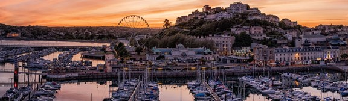
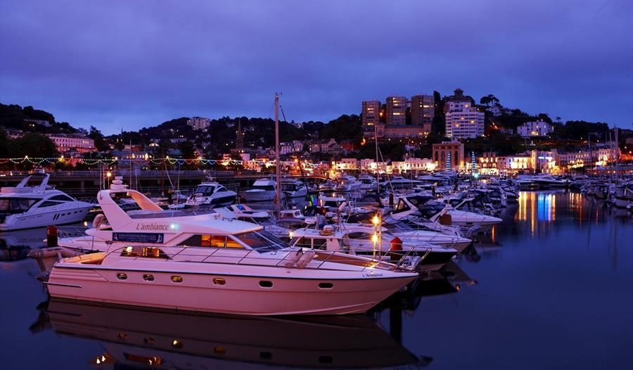

In the past
The three seaside towns of Torquay, Paignton and Brixham are the resorts known collectively as Torbay, or The English Riviera, and they nestle in a sheltered, east facing bay (Tor Bay) in south Devon, in the south west of England.
Torquay had small beginnings. In 1800, the population of this fishing village numbered less than 1,000. During the Napoleonic Wars however, Torquay, protected from the worst of the weather by the surrounding hills was the favoured port for shelter during the Channel gales and it served as a victualling and supply centre. Torquay does tend to get better weather than the surrounding areas and as a result, naval officers used to bring their wives and families here as a good place to live.
Later in the last century, the wealthy sick started making their way to Torquay. Sufferers of consumption, of which there were many including Elizabeth Barrett Browning, needed lots of fresh air. They came to the area because the air was at least warm. By the 1840's the population had reached 10,000. Once the railway came to Torquay in 1848, the population increased even more. There were around 2,000 bedrooms in the town at this time, mostly catering for the unwell.
So as not to disturb the tranquility of the sick, various bye-laws were enacted. For example men were not allowed to bathe within 50 yards of any bathing machine used by ladies. These machines were essentially a shed on large wheels inside which ladies could change. They were towed by horses into the sea, so the ladies could slip discreetly into the water.
In the current century, the resort has focused more on attracting the healthy, which it has done with considerable success. In the early part of the century, you needed a certain amount of money to afford a holiday here, but since the 1950s and mass motoring, it has become much more accessible, and affordable for everyone. It's well worth booking in advance if you're thinking of coming in the high season.
Agatha Christie who was born here and had a fondness for the area, set many of her thrillers in Torbay - there's an Agatha Christie Trail where you can follow the sleuthing exploits of Miss Marple.
Tarquay Today
Torquay is a cheerful place, epitomised by the colourful lights which go right around the bay. They're on all year round and it lends a bit of cheer, especially when you see them in January. The town area is quite spread out and occupies a rock promontory which divides Babbacombe Bay from Tor Bay.
Babbacombe, high on the wooded cliffs facing north east is a couple of miles from the centre of Torquay and offers some spectacular views of the red sandstone cliffs and the coastline below. From here you can get to several small sandy coves by going down steep cliffside roads, or in the case of Oddicombe Beach, by the cliff railway. Babbacombe, together with the neighbouring village of St Marychurch is a very pleasant part of Torquay with plenty of attractions on the doorstep.
Torquay Harbour
In the middle is the main centre of Torquay. The small harbour is the hub. You can go on boat trips to neighbouring towns such as Brixham and Dartmouth, or go on fishing trips or pleasure cruises. The Marina adjoins the harbour and spreads along half a mile or so to the Princess Theatre.
Torquay Harbour is sheltered by two piers. Princess Pier to the west and Haldon Pier to the south. Princess Pier is a popular promenade complete with seating, and it also provides a favourable spot for anglers on the seaward side.
The Cockington Village
At the other end is the quaint village of Cockington, a mile back from the seashore (you can go there by horse and trap if you like). This is surprisingly unspoilt with thatched roofed cottages in a woodland setting. Time seems to have passed by on the main road between the two busiest resorts on the Devon coast and left Cockington alone. See England as it used to be.
Cockington is a village near Torquay in the English county of Devon. It has old cottages within its boundaries, and is about a half a mile away from Torquay.
The Pavilion
At the back of the harbour and marina you have the copper domed Pavilion, an unusual Edwardian building with a golden past in entertainment, now a pleasant gathering of shops. There are attractive gardens in front of it, and also further along the promenade are sunken gardens. The Pavillion shopping centre next to the harbour and Princess Gardens in Torquay. The building is a renovated Edwardian theatre.
Torre Abbey Sands
If you want to go on the beach, Torre Abbey Sands further along is the place, but not at high tide when the sands are covered by the sea. There are popular beaches further along the front though for the serious beach enthusiast and quieter ones in the opposite direction at Meadfoot Bay. Altogether Torquay has three Blue Flag beaches - more than any other UK resort.
Torquay is not short of shops. Away from the harbour curve the attractive terraces of Fleet Street, a pedestrianised shopping area. There is a recent indoor speciality shopping centre, Fleet Walk, blended in at the back of Fleet Street. The shops continue as you go up the slope of Union Street with a good mix of local shops, and some familiar high street names.